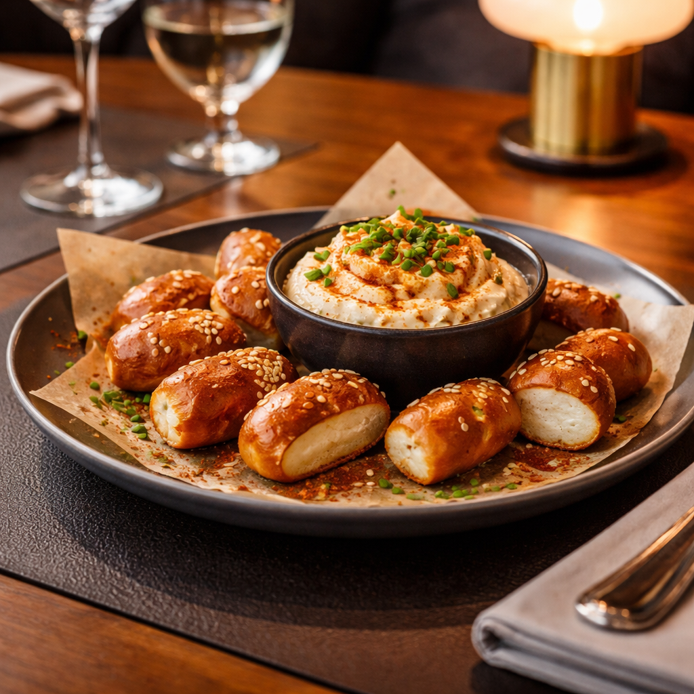
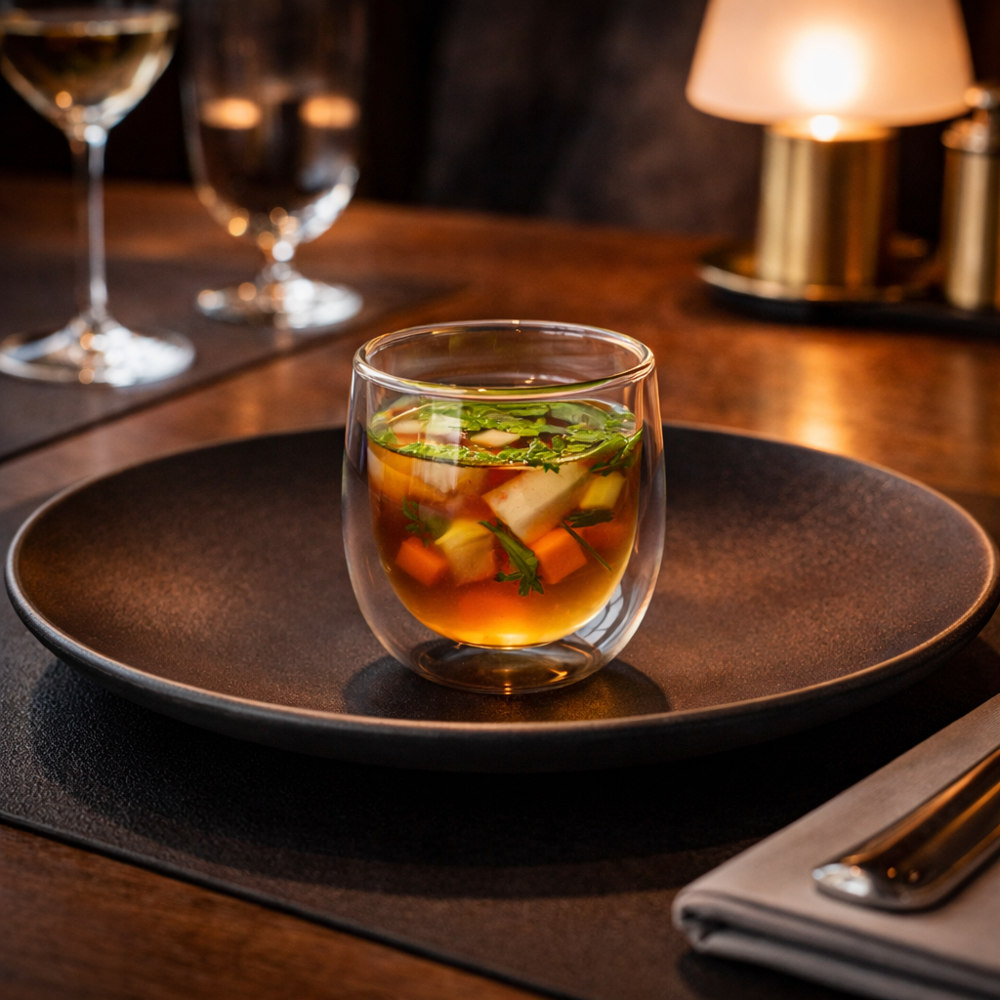
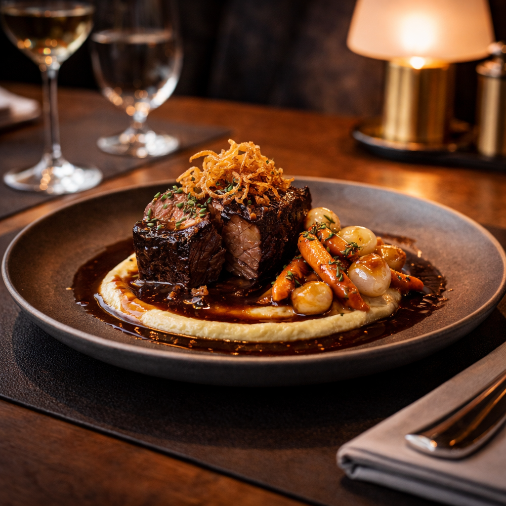
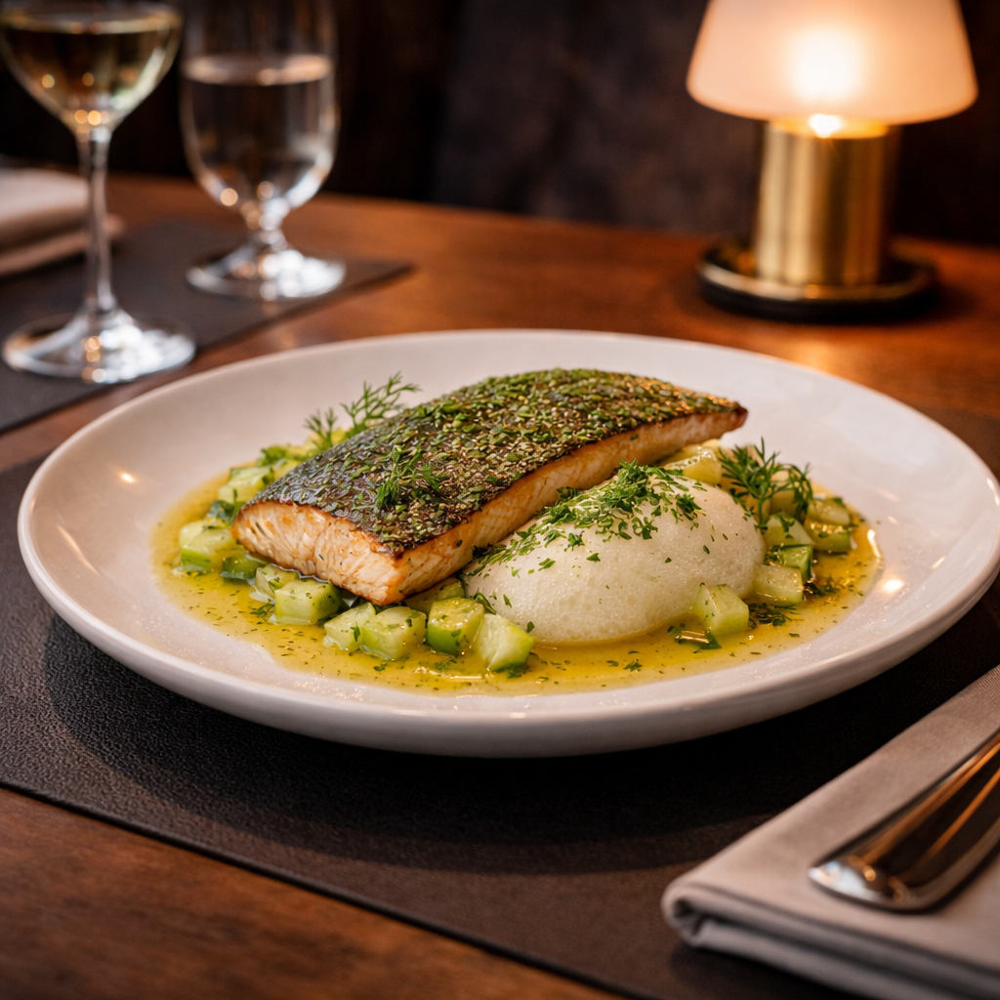
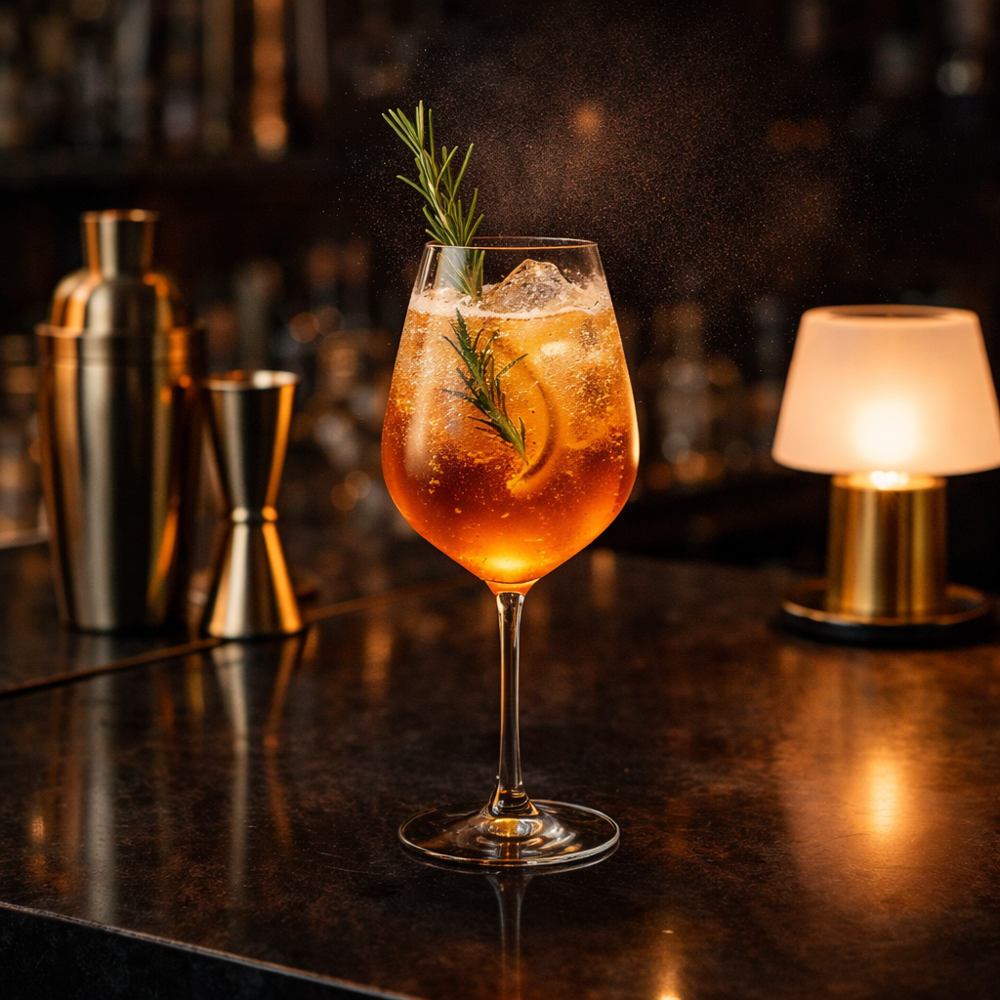
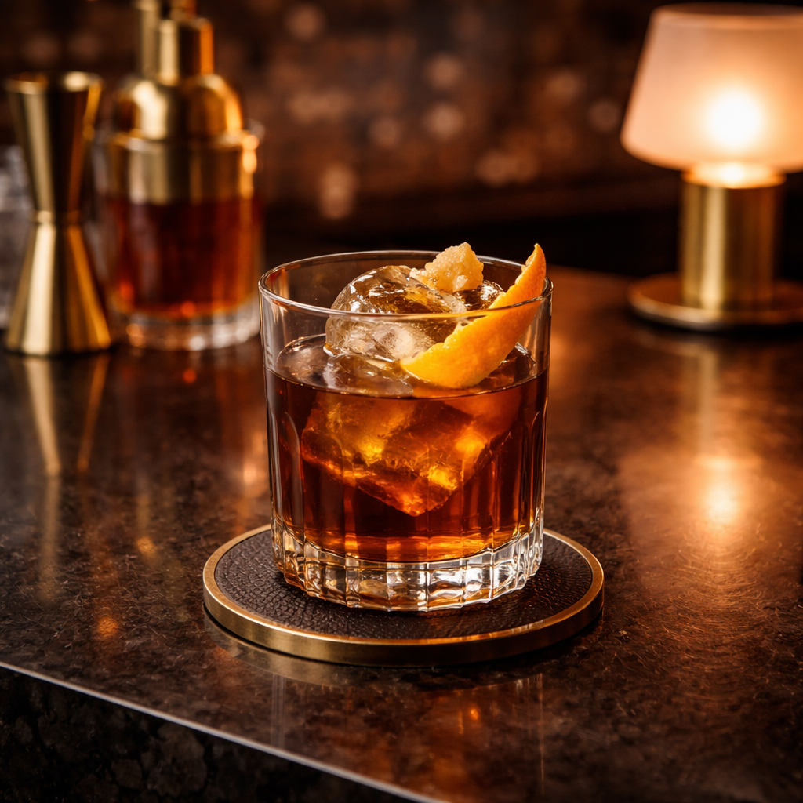

Alpine Data Salad
Apfel, Gartenkräuter, gepickelte Gurke, Senfperlen, Brezn-Crunch.
Menükarte
Unsere Karte spielt mit vertrauten bayerischen Geschmacksbildern, veredelt sie aber mit Präzision, Kontrast und einer klaren visuellen Handschrift.

Starter
Apfel, Gartenkräuter, gepickelte Gurke, Senfperlen, Brezn-Crunch.

Laugenchips mit Obazda-Creme, Rauchpaprika und Schnittlauch.

Klare Rinderessenz mit Wurzelgemüse und feinem Kräuteröl.
Main Frames

Langsam gegartes Rind, Dunkelbiersauce, Selleriepüree, Wurzelgemüse und knuspriger Zwiebel-Glanz.

Kräuterknödel, Pilzjus, glasierte Karotten, Petersilienstaub.

Forelle mit Dill, Kartoffelschaum, Gurke und Zitronenbutter.
Dessert und Drinks

Schokolade, Kirsche, Espresso, Rauchsalz und Spiegelglas-Finish.

Alpenbitter, Tonic, Rosmarin und Zitrusnebel.

Dunkler Whisky, Waldhonig, Bitters und Orangenzeste.
Gericht
CHF 0